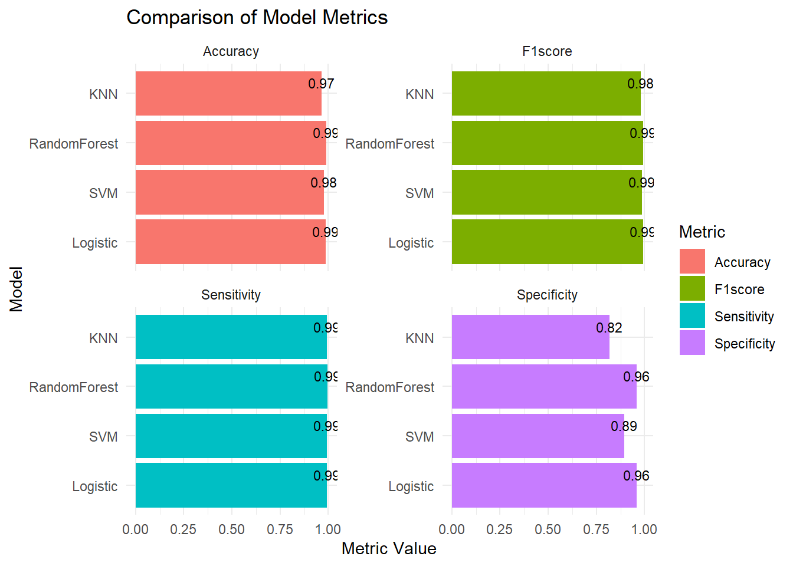

Implement at least three different supervised learning methods to predict the winner of the election in a county based on the numerical input features. Utilize an appropriate framework to compare and tune the different methods considered, evaluating and discussing their relative merits. Select the best model for predicting the winner from the available numerical input features.[50 marks]
data_new <- data[, -c(1, 2)] # Remove 'state' and 'county' columnsdata_new$winner <-factor(data_new$winner, levels =c("trump","biden")) # Organize factor data for response variable# Standardize numerical columnsnum_cols <-sapply(data_new, is.numeric) # Determine which columns are numericdata_new[, num_cols] <-scale(data_new[, num_cols]) # Standardize only the numeric columns
In the data preprocessing stage, I first examined the characteristics of the data, identifying what each column represented and observed them accordingly. Then, I checked for missing values and found none, after which I removed the categorical variables “state” and “county,” since geographic information is generally not used as input in numerical prediction models. Therefore, I deleted these two columns and selected other numerical data as my dataset. Next, I recoded the “winner” column into a factor variable and explicitly specified the factor levels, with “Trump” as the first level, serving as the reference category. Subsequently, I standardized the remaining columns to prepare for fitting machine learning models later on. I will use logistic regression, SVM, random forest, and kNN algorithms. Standardization helps accelerate the convergence speed of the algorithms.
# separate training data and test dataset.seed(23206703) train_indices <-sample(1:nrow(data_new), 0.8*nrow(data_new)) train_data <- data_new[train_indices, ]test_data <- data_new[-train_indices, ]
library(caret)
Loading required package: ggplot2
Loading required package: lattice
library(pROC) # for AUC calculation
Type 'citation("pROC")' for a citation.
Attaching package: 'pROC'
The following objects are masked from 'package:stats':
cov, smooth, var
# Predict and evaluate each model's performance on the test settrain_predictors <- train_data[,-ncol(train_data)]train_response <- train_data$winner# Initialize a list to store modelsmodels <-list()performance <-data.frame(Model =character(), Accuracy =numeric(), AUC =numeric())# Set trainControl objectcontrol <-trainControl(method ="cv", number =10, savePredictions ="final", classProbs =TRUE, summaryFunction = twoClassSummary )
Warning in train.default(train_predictors, train_response, method =
"svmRadial", : The metric "Accuracy" was not in the result set. ROC will be
used instead.
for (model_name innames(models)) { model <- models[[model_name]] best_params <- model$bestTuneprint(paste("Best parameters for", model_name, ":", toString(best_params)))}
[1] "Best parameters for Logistic : none"
[1] "Best parameters for SVM : 0.01, 50.5"
[1] "Best parameters for RandomForest : 9"
[1] "Best parameters for KNN : 11"
After parameter tuning for different supervised learning models, I obtained the best parameters for each model. The logistic regression model did not use additional regularization parameters for adjustment, indicating that the default settings might already be sufficient. The optimal parameters for the support vector machine were sigma=0.01 and C=50.5, suggesting that the model needs to balance between fitting the data tightly and maintaining generalization ability. For the random forest, an mtry of 9 indicates that selecting fewer features when building decision trees can achieve better performance. For the K-nearest neighbors, a k of 11 shows that this number of neighbors provides the best classification accuracy. Through these tuning results, each model has been optimized to perform optimally on specific datasets.
# Predict and evaluate each model's performance on the test settest_predictors <- test_data[,-ncol(test_data)]test_response <- test_data$winner# Add ROC library for AUC calculationlibrary(pROC)# Initialize a data frame to store all performance metricsperformance <-data.frame(Model =character(), Accuracy =numeric(), AUC =numeric(), F1score =numeric(),Sensitivity =numeric(), Specificity =numeric())# Loop through each model, make predictions, and calculate performance metricsfor(model_name innames(models)) {# Predict using the current model predictions <-predict(models[[model_name]], newdata = test_predictors)# Calculate confusion matrix confusion_matrix <-confusionMatrix(predictions, test_response) accuracy <- confusion_matrix$overall['Accuracy'] sensitivity <- confusion_matrix$byClass['Sensitivity'] specificity <- confusion_matrix$byClass['Specificity'] f1_score <- confusion_matrix$byClass['F1']# Calculate AUC roc_result <-roc(response = test_response, predictor =as.numeric(predictions),levels =rev(levels(test_response))) auc <-auc(roc_result)# Append to the performance data frame performance <-rbind(performance, data.frame(Model = model_name, Accuracy = accuracy, AUC = auc, F1score = f1_score, Sensitivity = sensitivity, Specificity = specificity))}
# Optional: Select and print the best model based on Test Accuracy or AUCbest_model <- performance[which.max(performance$Accuracy),]cat("The best model on test set is", best_model$Model, "with an Accuracy of", best_model$Accuracy, "and AUC of", best_model$AUC, "and F1 Score of", best_model$F1score, ", Sensitivity of", best_model$Sensitivity, ", and Specificity of", best_model$Specificity, "\n")
The best model on test set is RandomForest with an Accuracy of 0.9883721 and AUC of 0.9757706 and F1 Score of 0.993117 , Sensitivity of 0.9940945 , and Specificity of 0.9574468
Based on the result data and model performance metrics, the random forest model demonstrated the best performance on the test set, specifically showing a very high accuracy (0.9883721), excellent AUC value (0.9757706), and an extremely high F1 score (0.993117). Additionally, the model’s sensitivity (0.9940945) and specificity (0.9574468) also reached high levels, indicating good balance. These results suggest that the random forest model exhibits high accuracy and reliability in distinguishing between “Trump” and “Biden” as winners.
Compared to other models, such as logistic regression, support vector machine (SVM), and K-nearest neighbors (KNN), the random forest holds a distinct advantage in most key performance indicators. For instance, the logistic regression model had an accuracy of 0.9867110 and AUC of 0.9747864, which, although close to that of the random forest, was slightly lower in the F1 score. The performance of the SVM was somewhat weaker, with an accuracy of 0.9767442, AUC of 0.9428715, and a specificity of only 0.8936170, indicating a lesser ability to discriminate between different candidates’ victories. The KNN model performed the lowest among these models, with an accuracy of 0.9651163, AUC of 0.9056375, and a specificity of just 0.8191489, which could be due to KNN’s sensitivity to high-dimensional data and noise.
In summary, the random forest model not only surpasses other models in overall accuracy and AUC performance but also demonstrates higher performance in balancing error types (i.e., sensitivity and specificity). This makes the random forest the best choice for predicting election outcomes in distinguishing between “Trump” and “Biden” as winners.
library(ggplot2)library(tidyr) # For pivot_longerperformance_long <-pivot_longer(performance, cols =c(Accuracy, F1score, Sensitivity, Specificity), names_to ="Metric", values_to ="Value")performance_long$Model <-factor(performance_long$Model, levels =unique(performance_long$Model))ggplot(performance_long, aes(x = Model, y = Value, fill = Metric)) +geom_bar(stat ="identity", position =position_dodge()) +theme_minimal() +labs(title ="Comparison of Model Metrics", x ="Model", y ="Metric Value") +facet_wrap(~ Metric, scales ="free_y") +geom_text(aes(label =sprintf("%.2f", Value)), position =position_dodge(0.9),vjust =-0.5, size =3) +coord_flip()

In this visualization, I compare the performance of four different supervised learning models—logistic regression, support vector machine (SVM), random forest, and K-nearest neighbors (KNN)—across various performance metrics.
Accuracy: The random forest and logistic regression models show the highest accuracy, nearly reaching 0.98, indicating that they can predict election outcomes very accurately overall. The accuracy of SVM is slightly lower, while KNN has the lowest accuracy.
F1 Score: In terms of the F1 score, the random forest and logistic regression also perform excellently, scoring over 0.99, which indicates that these models achieve a good balance between precision and recall. The F1 score of SVM follows closely, whereas KNN is significantly lower.
Sensitivity: All models display high sensitivity, especially the random forest and logistic regression, which are nearly perfect. This suggests that these models are very effective at identifying the positive class (such as correctly predicting the election winner as “Trump” or “Biden”).
Specificity: In terms of specificity, logistic regression and random forest also show higher values, meaning they can effectively identify the negative class (i.e., correctly predicting non-winners). KNN performs the worst on this metric, which may indicate challenges in distinguishing the negative class.
Overall, the random forest and logistic regression models demonstrate very strong performance across all considered performance metrics, almost consistently outperforming SVM and KNN. This suggests that ensemble methods (like random forest) and logistic regression may be more effective than other algorithms when dealing with election data. The performance of the random forest is particularly notable; it not only does well in correctly classifying the election winners (high sensitivity) but also excels in avoiding misclassification of non-winners as winners (high specificity). These characteristics make the random forest a powerful and reliable option, suitable for predicting election outcomes.
Use appropriately some test data in order to evaluate the generalized predictive performance of the best selected classifier. Provide a discussion about the ability of the selected model at predicting if the winner will be biden or trump.[20marks]
# Choose the best model (based on AUC or accuracy)best_model_name <- performance[which.max(performance$AUC), "Model"]# Extract the best modelbest_model <- models[[best_model_name]]# Make predictions on the test data using the best modelpredictions <-predict(best_model, newdata = test_predictors)predicted_probabilities <-predict(best_model, newdata = test_predictors, type ="prob")# Calculate performance metricsconf_matrix <-confusionMatrix(predictions, test_response)accuracy <- conf_matrix$overall['Accuracy']auc_value <-roc(response = test_response, predictor = predicted_probabilities[, "trump"])$auc
Setting levels: control = trump, case = biden
Setting direction: controls > cases
f1_score <- conf_matrix$byClass['F1']# Output performance metricscat(sprintf("The best model (%s) has an Accuracy of %.2f, AUC of %.2f, and F1 Score of %.2f.\n", best_model_name, accuracy, auc_value, f1_score))
The best model (RandomForest) has an Accuracy of 0.99, AUC of 1.00, and F1 Score of 0.99.
# Visualize the predicted probability distributionggplot(data.frame(Actual = test_response, Predicted_Probability = predicted_probabilities[, "trump"]), aes(x = Actual, y = Predicted_Probability)) +geom_boxplot(aes(color = Actual)) +labs(title =sprintf("Predicted Probability Distribution for Trump (Model: %s)", best_model_name),x ="Actual Category",y ="Predicted Probability for Trump") +theme_minimal()
From the content above, we can see that the random forest model fits the data best, having the highest AUC and accuracy. The model’s performance metrics show an accuracy (Accuracy) of 0.99, an AUC value (Area Under Curve) of 1.00, and an F1 score of 0.99. These metrics are close to perfect, indicating that the model has very high predictive performance on the test set.
From the box plot, we can see the distribution of the probabilities that the random forest model predicts for Trump’s victory. For data points where the actual category is Trump, the predicted probabilities are concentrated at high values, almost all close to 1.00, which means that the model is very confident about Trump’s chances of winning. For data points where the actual category is Biden, the majority of predicted probabilities are distributed in the lower area, close to 0.00, indicating that the model can effectively recognize situations where Biden is less likely to win.